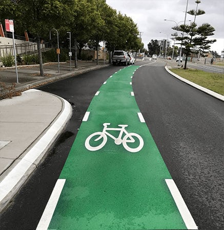

Bicentennial Bikeway
Brisbane City, Queensland
Lane Distance: 7 Miles
Estimated Time: 2.5 Hours
Lane Materials: Concrete/Asphalt
Bike Location: On Ground
Bikeway: Off Road
Difficulty Level: Easy
This is a very popular area for hiking, road biking, and running, so you'll likely encounter other people while exploring. The trail is open year-round andis beautiful to visit anytime. Dogs are welcome, but must be on a leash.
Water Spots Along the Bike Lane
Rate and Share Your Bike Experience!
User Reviews

John Doe
Great for beginners and pros alike! The route is smooth with plenty of shade...